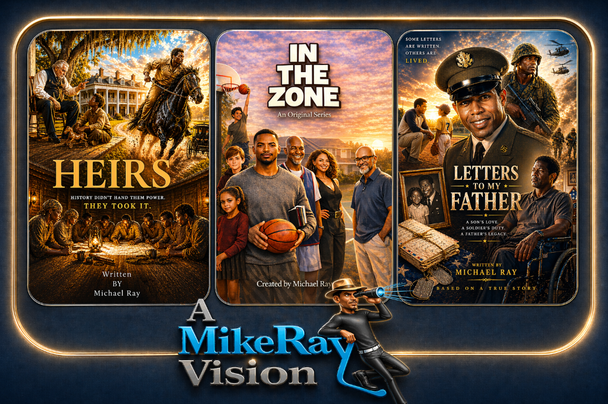
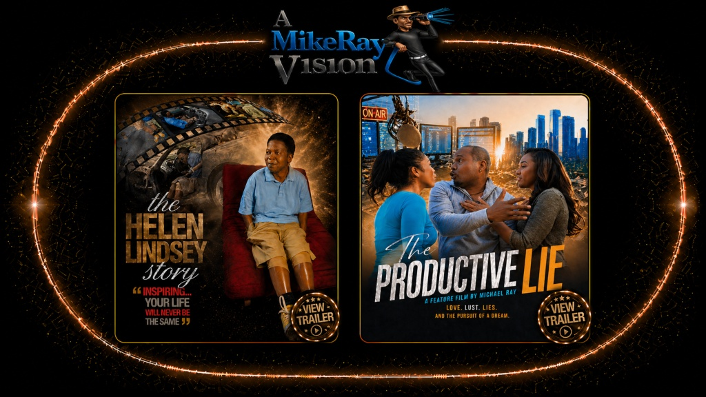

Featured Projects
What's In
The Works
Stories on the page. Projects on the rise.
Featured Projects
Stories on the page. Projects on the rise.

In Development
Three stories. Three worlds. One vision.
Heirs — A sweeping drama rooted in legacy, land, and power. Set against a Southern backdrop steeped in history, Heirs follows a family whose bloodline carries the weight of generations — and the secrets that threaten to unravel it all. History didn't hand them power. They took it.
In The Zone — An original sitcom set inside a barbershop, where the chairs are always full and the conversations cut deeper than the clippers. Created by Michael Ray, In The Zone is a love letter to community, culture, and the people who hold it together — one story at a time.
Letters to My Father — A son's love. A soldier's duty. A father's legacy. Written from a deeply personal place, this drama traces the bond between a son and his father — an Army sergeant who passed away from ALS at 46 — through letters that were never sent, and a story that demanded to be told. Based on a true story.

Festival Work
The truth was always there. They just kept themselves too busy to see it.
The Productive Lie is an episodic feature written, directed, and starring Mike Ray — a story about the stories we tell ourselves to avoid the ones that matter most. Shot on an independent budget with a cinematic eye and an unflinching script, it stands as proof that the size of your resources has nothing to do with the size of your vision.
The film has toured the festival circuit and earned recognition for its authentic performances and tightly crafted narrative. It remains one of Mike Ray's most personal works — a film that asks hard questions and doesn't flinch from the answers.